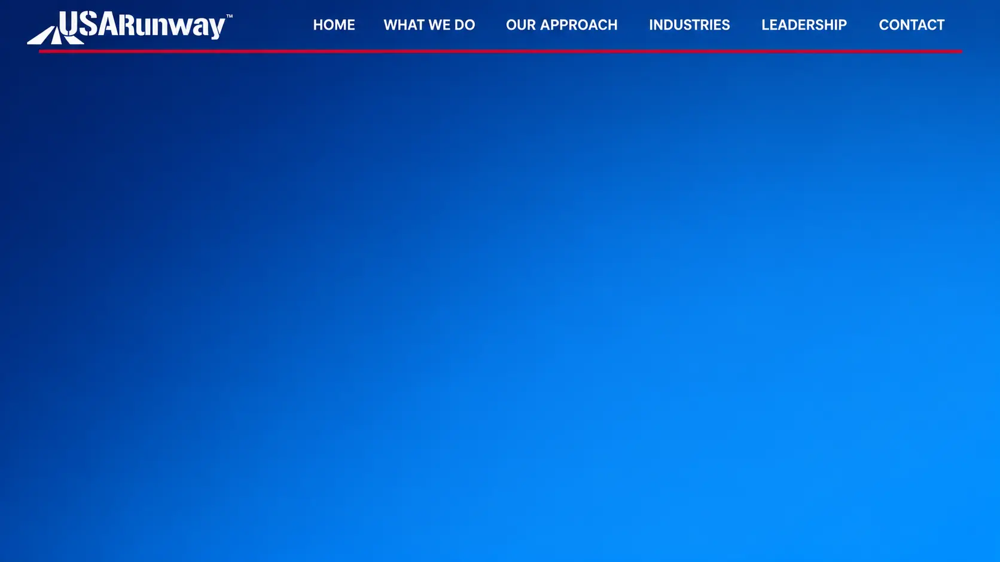

Before You Invest in U.S. Expansion,
Know Where You Are Going.
Entering the U.S. market can require significant investment long before the first
commercial opportunity is created. USARunway evaluates the opportunity first—
helping companies determine where to focus their time,
capital and resources before committing to expansion.
-
01
Assess the Opportunity
Understand the market, opportunity, barriers and commercial fit
before committing significant resources. -
02
Focus the Investment
Prioritize the markets, customers, partners
and relationships most relevant to the opportunity. -
03
Enter Prepared
Move forward with defined positioning,
strategy, targets and an execution pathway.
Designed to reduce unnecessary expansion spend
and create a more focused path to opportunity.